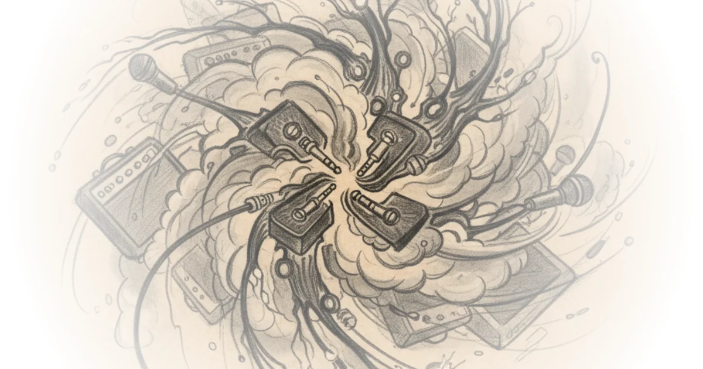

JHS Pedals Just Entered the Plugin World — And It's Exactly What You've Been Waiting For
The Collaboration That Actually Makes Sense
Josh Scott and JHS Pedals have done something unexpected: they've entered the plugin space with Mixwave, a developer known for modeling gear from Tur Rock, Benson, Milkman, and 1981. But this isn't some generic digital recreation. Mixwave builds component-level models — literally replicating each resistor, capacitor, transistor, and tube inside JHS's circuits. They're not just approximating the sound. They're rebuilding the actual designs from the analog world, piece by piece.

Scott wanted to start simple: give people what he personally enjoys using. The first round includes the Loud Is More Good amplifier, a Fender-style design with four knobs — volume, treble, middle, bass. He sets all controls at noon because, as he admits, "I'm extremely boring, and I love that." But don't let that fool you. This amp is loud. In real life, he'd set the volume around three on the dial, not noon.
The Cabinet Section That Changes Everything
The cabinet section alone is worth the price of admission. You get four microphones across two speakers — a combo amp setting with an extension cab. You can flip each speaker on and off independently. For a Fender-style amp, Scott prefers ceramic almost always: specifically, a Jensen 12-inch ceramic.
His go-to dynamic microphone? The Shure SM7B. That's his favorite for guitar. Then he adds a second mic to the other speaker, creating what he calls "a bigger sound that's more versatile" with more dynamic range.
There's even a third microphone option — ribbon mics like the Royer 122 positioned at different distances. This gives you something Scott describes as "more girth" in the mix.
The Signal Chain That Actually Works
Before diving into individual pedals, there's one critical detail: input and output controls determine how much signal feeds into these effects. Every guitar is different. Your interface volume, your preamps, gain staging — all of it matters. Too much signal into the front end creates problems. The output control manages what you're pushing into the channel.
The processing section includes SSL-style options: input processing with high-pass, low-pass, and a compressor. Same on the output. This isn't just modeling pedals. It's an entire studio console in plugin form.
The Pedals That Actually Matter
Pulp N Peel Compressor: This was always a studio device in Scott's mind — he loved weird compression on overhead drums with distortion, simple tilt-style tone controls. He describes turning it on and setting the blend where full compression kicks in. It's transparent when you want it to be.
Morning Glory: His personal usage is always on with a clean amp. He turns up the drive more than usual but keeps high cut on. The dry-wet blend makes this "absolutely phenomenal for bass guitar," he says. One preset he created is called "Josh Is Boring" — a foundational clean sound that's 97.6% always on in his rigs, perfect for fingerpicking and strumming.
Hard Drive: This is where high gain lives. For slide playing, he sets the gate at just 0.12 — so barely audible it's beautiful. The hard drive doesn't have this feature in pedal form, and Scott admits he "mildly regrets" not putting it in. But in plugin form? Dead silent.
Panther Cub: A discontinued pedal that was incredibly hard to produce. This version is better because modulation is there and syncability works. It's a major upgrade from the original.
The Effects That Complete the Chain
The analog delay includes bucket brigade chipset replication — exactly like the original. You have sync features when engaged, tapping tempo controls, mod intensity and speed. But here's what makes it special: you can go fully wet with the mix control, a feature that wasn't always available on analog delays.
And then there's Nata Spring — something JHS has never released before. A classic-sounding spring tank, made stereo so your reverb lives in that stereo field across different speakers. Scott leaves this on all the time.
"This is how I would probably leave this on all the time and just have it part of my rig."
Bottom Line
The most compelling thing about these plugins isn't just that they exist — it's that Mixwave built them component-by-component, exactly as designed. The amp section alone with four microphones across two speakers is something many guitarists physically do in studios but never had access to digitally. Critics might note this requires a steep learning curve for those unfamiliar with digital recording environments. But for anyone who's wanted JHS's actual sounds in software form — without approximations — this is exactly what was missing.
The plugins give you presets, yes, but you can rearrange the entire chain later. Save your own setups. This isn't just modeling. It's the actual gear living in your computer.